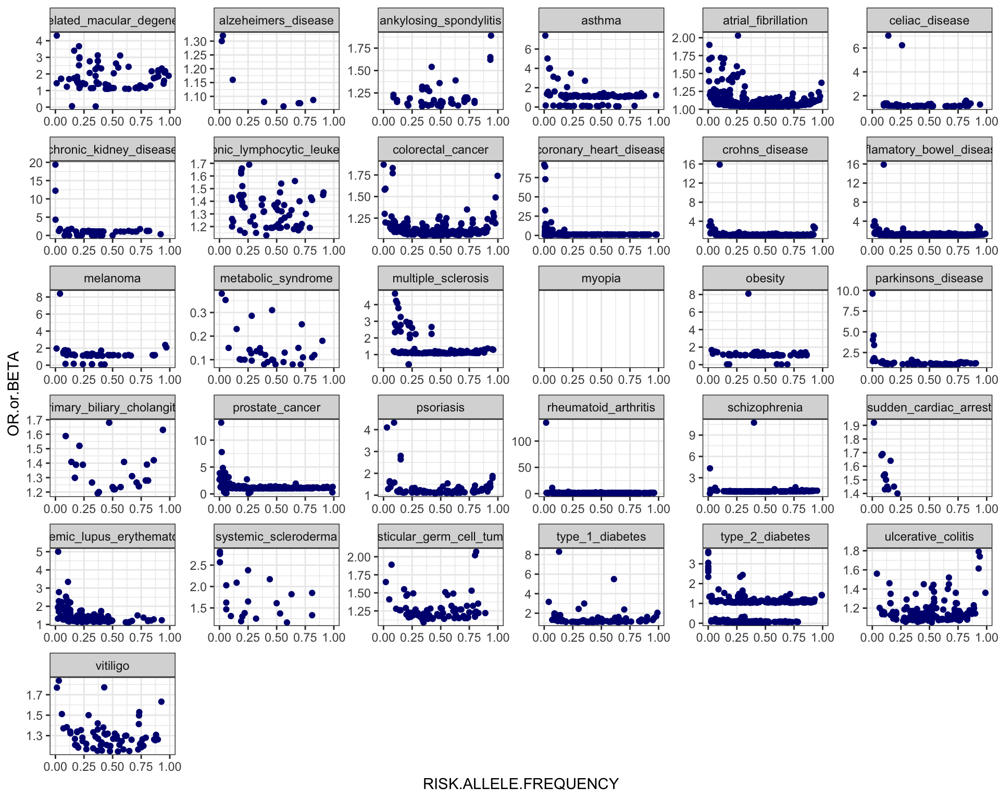
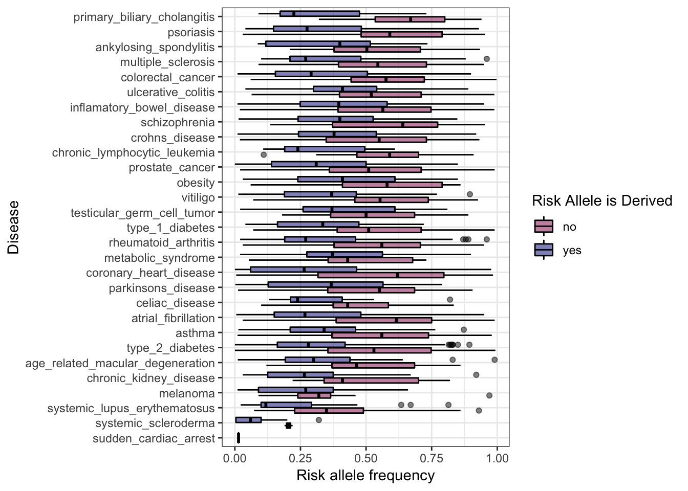

Last updated: 2019-10-07
Checks: 6 1
Knit directory: GWAS_catalog/
This reproducible R Markdown analysis was created with workflowr (version 1.4.0). The Checks tab describes the reproducibility checks that were applied when the results were created. The Past versions tab lists the development history.
Great! Since the R Markdown file has been committed to the Git repository, you know the exact version of the code that produced these results.
Great job! The global environment was empty. Objects defined in the global environment can affect the analysis in your R Markdown file in unknown ways. For reproduciblity it’s best to always run the code in an empty environment.
The command set.seed(20190930) was run prior to running the code in the R Markdown file. Setting a seed ensures that any results that rely on randomness, e.g. subsampling or permutations, are reproducible.
Great job! Recording the operating system, R version, and package versions is critical for reproducibility.
Nice! There were no cached chunks for this analysis, so you can be confident that you successfully produced the results during this run.
Using absolute paths to the files within your workflowr project makes it difficult for you and others to run your code on a different machine. Change the absolute path(s) below to the suggested relative path(s) to make your code more reproducible.
| absolute | relative |
|---|---|
| ~/GWAS_catalog/data/IDS.txt | data/IDS.txt |
Great! You are using Git for version control. Tracking code development and connecting the code version to the results is critical for reproducibility. The version displayed above was the version of the Git repository at the time these results were generated.
Note that you need to be careful to ensure that all relevant files for the analysis have been committed to Git prior to generating the results (you can use wflow_publish or wflow_git_commit). workflowr only checks the R Markdown file, but you know if there are other scripts or data files that it depends on. Below is the status of the Git repository when the results were generated:
Ignored files:
Ignored: .DS_Store
Ignored: .Rproj.user/
Untracked files:
Untracked: code/Assoc_SNPs.txt
Untracked: code/pull_snps.sh
Untracked: code/pull_snps.sh~
Untracked: code/text.txt
Untracked: data/1kg_phase3_snps.tsv
Untracked: data/1kg_phase3_snps_small.tsv
Untracked: data/Assoc_SNPs.txt
Untracked: data/BRACAX_breast_cancer.tsv
Untracked: data/IDS.txt
Untracked: data/age_related_macular_degeneration.tsv
Untracked: data/alzheimers_disease.tsv
Untracked: data/ankylosing_spondylitis.tsv
Untracked: data/asthma.tsv
Untracked: data/atrial_fibrillation.tsv
Untracked: data/breast_cancer_all.tsv
Untracked: data/celiac_disease.tsv
Untracked: data/chronic_kidney_disease.tsv
Untracked: data/chronic_lymphocytic_leukemia.tsv
Untracked: data/colnames.txt
Untracked: data/colorectal_cancer.tsv
Untracked: data/coronary_heart_disease.tsv
Untracked: data/crohns_disease.tsv
Untracked: data/inflamatory_bowel_disease.tsv
Untracked: data/melanoma.tsv
Untracked: data/metabolic_syndrome.tsv
Untracked: data/multiple_sclerosis.tsv
Untracked: data/obesity.tsv
Untracked: data/parkinsons_disease.tsv
Untracked: data/pathological_myopia.tsv
Untracked: data/primary_biliary_cholangitis.tsv
Untracked: data/prostate_cancer.tsv
Untracked: data/psoriasis.tsv
Untracked: data/rheumatoid_arthritis.tsv
Untracked: data/schizophrenia.tsv
Untracked: data/sudden_cardiac_arrest.tsv
Untracked: data/systemic_lupus_erythematosus.tsv
Untracked: data/systemic_scleroderma.tsv
Untracked: data/testicular_germ_cell_tumor.tsv
Untracked: data/text.txt
Untracked: data/text.txt~
Untracked: data/type_1_diabetes.tsv
Untracked: data/type_2_diabetes.tsv
Untracked: data/ulcerative_colitis.tsv
Untracked: data/vitiligo.tsv
Note that any generated files, e.g. HTML, png, CSS, etc., are not included in this status report because it is ok for generated content to have uncommitted changes.
These are the previous versions of the R Markdown and HTML files. If you’ve configured a remote Git repository (see ?wflow_git_remote), click on the hyperlinks in the table below to view them.
| File | Version | Author | Date | Message |
|---|---|---|---|---|
| Rmd | 15ce14d | jgblanc | 2019-10-07 | Added derived vs ancestral analysis |
| html | 20c0720 | jgblanc | 2019-10-01 | Build site. |
| html | dd407a3 | jgblanc | 2019-10-01 | Build site. |
| Rmd | 4158c24 | jgblanc | 2019-10-01 | Added RAF vs ES plot |
| html | 17ac802 | jgblanc | 2019-10-01 | Build site. |
| Rmd | 8f9a7fd | jgblanc | 2019-10-01 | Recreated Kido Figure |
rm(list = ls())
library(dplyr)
library(ggplot2)
library(knitr)
library(data.table)Filter for:
Myopia - pathological myopia - EFO_0004207
Sudden cardiac arrest - EFO_0004278
Systemic lupus erythematosus - EFO_0002690 Check this one
Systemic sclerosis - systemic scleroderma - EFO_0000717
Melonoma - EFO_0000756
Atrial fibrillation - EFO_0000275
Type II Diabetes - type II diabetes mellitus - EFO_0001360
Chronic kidney disease - EFO_0003884
Age-related macular degeneration - EFO_0001365
Primary biliary cholangitis - Primary biliary cirrhosis - EFO_1001486
Vitiligo - EFO_0004208
Ankylosing spondylitis - EFO_0003898
Deal with Breast Cancer later Breast cancer - triple negative breast cancer (EFO_0005537), BRACAX breast cancer (EFO_0009443), estrogen-receptor postive breast cancer (EFO_1000649), estrogen-receptor negative breast cancer (EFO_0009781)
Crohn’s disease - EFO_0000384
Prostate cancer - prostate carcinoma - EFO_0001663
Celiac disease - EFO_0001060
Obesity - EFO_0001073
Colorectal cancer - EFO_0005842
Rheumatoid Arthritis - EFO_0000685
Psoriasis - EFO_0000676
Coronary heart disease - EFO_0001645
Testicular germ cell tumor - EFO_1000566
Type I diabetes - EFO_0001359
Ulcerative colitis - EFO_0000729
Schizophrenia - EFO_0000692
Metabolic syndrome - EFO_0000195
Chronic lymphocytic leukemia - EFO_0000095
Multiple sclerosis - EFO_0003885
Asthma - EFO_0000270
Inflamatory bowel disease - EFO_0000270
Parkinson’s disease - EFO_0002508
Late-onset Alzeheimers - Alzeheimer’s disease (late-onset) - EFO_1001870
combined <- rbind(age_related_macular_degeneration, alzeheimers_disease, ankylosing_spondylitis, asthma, atrial_fibrillation, celiac_disease, chronic_kidney_disease, chronic_lymphocytic_leukemia,colorectal_cancer, coronary_heart_disease, crohns_disease, inflamatory_bowel_disease, melanoma, metabolic_syndrome, multiple_sclerosis, myopia, obesity, parkinsons_disease, primary_biliary_cholangitis, primary_biliary_cholangitis, prostate_cancer, psoriasis, rheumatoid_arthritis, schizophrenia, sudden_cardiac_arrest, systemic_lupus_erythematosus, systemic_scleroderma, testicular_germ_cell_tumor, type_1_diabetes, type_2_diabetes, ulcerative_colitis, vitiligo)
fig4 <- combined %>% select(RISK.ALLELE.FREQUENCY, disease)
ggplot(data=fig4, aes(x=reorder(disease, RISK.ALLELE.FREQUENCY, FUN = median) , y=RISK.ALLELE.FREQUENCY)) + geom_boxplot(col = "navy", fill = "lightblue") + coord_flip() + ylab("Disease") + xlab("Risk allele frequency") + theme_bw()
| Version | Author | Date |
|---|---|---|
| 17ac802 | jgblanc | 2019-10-01 |
sample_size <- combined %>% group_by(disease) %>% count()
colnames(sample_size) <- c("disease", "num_associations")
kable(sample_size)| disease | num_associations |
|---|---|
| age_related_macular_degeneration | 72 |
| alzeheimers_disease | 8 |
| ankylosing_spondylitis | 86 |
| asthma | 146 |
| atrial_fibrillation | 428 |
| celiac_disease | 93 |
| chronic_kidney_disease | 68 |
| chronic_lymphocytic_leukemia | 67 |
| colorectal_cancer | 225 |
| coronary_heart_disease | 246 |
| crohns_disease | 296 |
| inflamatory_bowel_disease | 704 |
| melanoma | 51 |
| metabolic_syndrome | 33 |
| multiple_sclerosis | 137 |
| myopia | 32 |
| obesity | 92 |
| parkinsons_disease | 99 |
| primary_biliary_cholangitis | 46 |
| prostate_cancer | 333 |
| psoriasis | 148 |
| rheumatoid_arthritis | 385 |
| schizophrenia | 182 |
| sudden_cardiac_arrest | 13 |
| systemic_lupus_erythematosus | 165 |
| systemic_scleroderma | 21 |
| testicular_germ_cell_tumor | 78 |
| type_1_diabetes | 124 |
| type_2_diabetes | 485 |
| ulcerative_colitis | 197 |
| vitiligo | 69 |
ggplot(data=combined, aes(x = RISK.ALLELE.FREQUENCY, y=OR.or.BETA)) + geom_point(col = "navy") + facet_wrap(~disease, scales = "free") + theme_bw() + xlim(c(0,1))
| Version | Author | Date |
|---|---|---|
| dd407a3 | jgblanc | 2019-10-01 |
Get the IDS for the SNPs in the combined dataset
IDS <- combined2$SNPS
#write.table(IDS, "~/GWAS_catalog/data/IDS.txt",row.names = F, quote = F, col.names = F)Read in derived/ancestral allele info for all the combined SNPs that we had information for - generated using script pull_snp.sh
da_info <- read.table("data/Assoc_SNPs.txt")
coln <- read.table("data/colnames.txt")
colnames(da_info) <- unlist(coln[1,])Join the data table containing the dervied/ancestral info with the table containing the GWAS information
snps_with_da <- inner_join(da_info, combined2, by=c("snp" = "SNPS")) %>% distinct()Column “STRONGEST.SNP.RISK.ALLELE” is in the form “rsID-BASE”. Process this column to get the risk allele on it’s own.
sra <- as.character(snps_with_da$STRONGEST.SNP.RISK.ALLELE)
sra_new <- rep(NA, length(sra))
for (i in 1:length(sra)) {
sra_new[i] <- strsplit(sra[i], "-")[[1]][2]
}
snps_with_da$risk_allele <- sra_newDetermine if the risk allele is the derived or not.
derived_risk <- subset(snps_with_da, snps_with_da$derived_allele == snps_with_da$risk_allele)
derived_risk$derived_risk <- "yes"
ancestral_risk <- subset(snps_with_da, snps_with_da$derived_allele != snps_with_da$risk_allele)
ancestral_risk$derived_risk <- "no"
da_risk <- rbind(derived_risk, ancestral_risk)Risk Allele Freq vs Effect Size colored by derived vs. ancestral status
cols <- c("deeppink4", "navy")
ggplot(data=da_risk, aes(x = RISK.ALLELE.FREQUENCY, y=OR.or.BETA, col = derived_risk)) + geom_point(alpha = 0.5) + facet_wrap(~disease, scales = "free") + theme_bw() + xlim(c(0,1)) + scale_color_manual(values = cols, name = "Risk Allele is Derived")Box plot of risk allele frequencies separated by derived vs ancestral
ggplot(data=da_risk, aes(x=reorder(disease, RISK.ALLELE.FREQUENCY, FUN = median) , y=RISK.ALLELE.FREQUENCY, fill = derived_risk)) + geom_boxplot(col = "black", alpha = 0.5) + coord_flip() + xlab("Disease") + ylab("Risk allele frequency") + theme_bw() + scale_fill_manual(values = cols, name = "Risk Allele is Derived")
sessionInfo()R version 3.5.1 (2018-07-02)
Platform: x86_64-apple-darwin15.6.0 (64-bit)
Running under: macOS High Sierra 10.13.6
Matrix products: default
BLAS: /Library/Frameworks/R.framework/Versions/3.5/Resources/lib/libRblas.0.dylib
LAPACK: /Library/Frameworks/R.framework/Versions/3.5/Resources/lib/libRlapack.dylib
locale:
[1] en_US.UTF-8/en_US.UTF-8/en_US.UTF-8/C/en_US.UTF-8/en_US.UTF-8
attached base packages:
[1] stats graphics grDevices utils datasets methods base
other attached packages:
[1] data.table_1.12.2 knitr_1.23 ggplot2_3.1.1 dplyr_0.8.1
loaded via a namespace (and not attached):
[1] Rcpp_1.0.1 whisker_0.3-2 magrittr_1.5 workflowr_1.4.0
[5] munsell_0.5.0 tidyselect_0.2.5 colorspace_1.4-1 R6_2.4.0
[9] rlang_0.3.4 plyr_1.8.4 stringr_1.4.0 highr_0.8
[13] tools_3.5.1 grid_3.5.1 gtable_0.3.0 xfun_0.7
[17] withr_2.1.2 git2r_0.25.2 htmltools_0.3.6 lazyeval_0.2.2
[21] yaml_2.2.0 rprojroot_1.3-2 digest_0.6.19 assertthat_0.2.1
[25] tibble_2.1.1 crayon_1.3.4 purrr_0.3.2 fs_1.3.1
[29] glue_1.3.1 evaluate_0.14 rmarkdown_1.13 labeling_0.3
[33] stringi_1.4.3 compiler_3.5.1 pillar_1.4.1 scales_1.0.0
[37] backports_1.1.4 pkgconfig_2.0.2